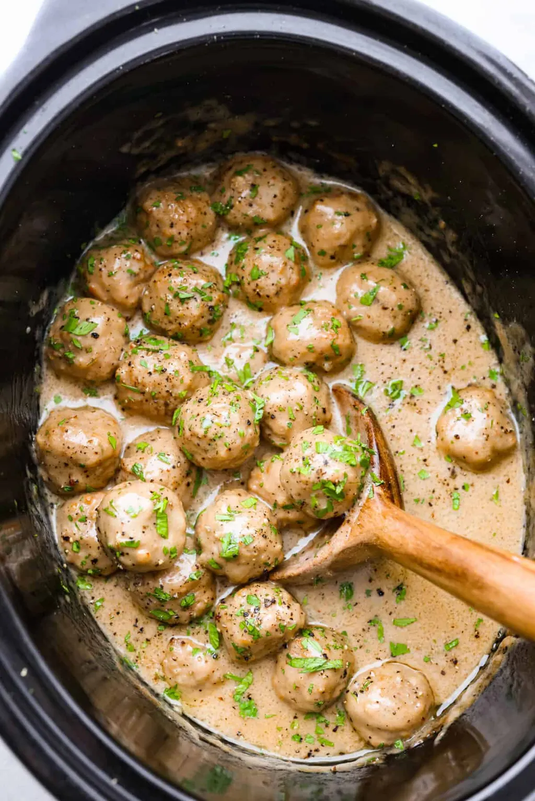

Swedish Meatballs

Ingredients
- Crock Pot
- 1 can cream of mushroom soup
- 1 can beef broth
- 1 packet onion soup mix
- 1 bag frozen Swedish meatballs
- 8oz Kluski noodles or egg noodles
- 8oz sour cream
Cooking Steps
- Put all liquid ingredients and onion soup mix into a
Crock Pot and stir well. Then pour in Swedish meatballs
-
Cook on low for 6-8 hours, or high for 2-4 hours.
-
Cook noodles according to package directions. Drain
noodles and dump into Crock Pot.
-
Stir in 8oz of sour cream, let warm up, then serve and enjoy!